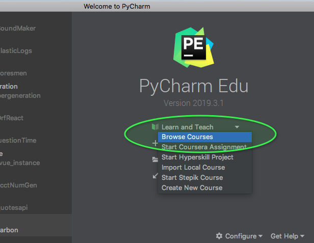

Understanding the data types and structures within any language are critical to be effective at utilizing it to it's fullest.
Python has it's primary "built in" data types and then those have been expanded upon greatly for various needs and reasons.
The objective this week is to go through the Intro to Programming course in the Pycharm Edu edition you downloaded and installed.
In this course you will be guided through the basics of the python language, learning about the primary data types and language syntax.
If you do not have Pycharm Educational edition you will need to download it from here.
# windows
press windows key then start typing "Pycharm" to find it.
# Mac
press command + spacebar and start typing "Pycharm" to find it.
If you are opening it for the first time you may get asked som questions. Complete what is needed . Defaults are fine.
You should finally end up at a landing page that looks like the imag* below. Your screen may not say "Learn and Teach" but it should be similar. Under it select "Browse courses"

That view above is the main course view. It consists of 3 parts. The course files, the code editor, and the instructions and test runners.
You can jump around in the course but I would not recommend it for beginners. It will be best for you to go through and complete each section. The portions you have not completed will have an empty checkbox. The ones you have completed successfully will fill in with green as you see in the picture below.

python3 <filename>.py. The results of your fule running will appear in
the console panel at the bottom. It can be expanded or minimized as you
desire. The play button that appears there will also re run your code.